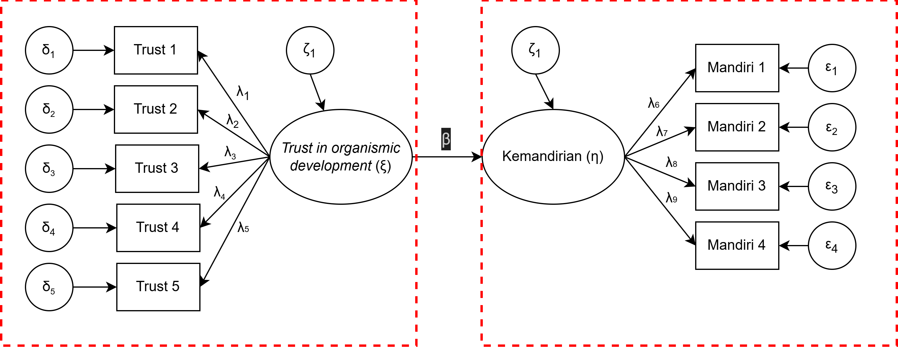

Pengantar Latent Variable Modeling
Statistik dalam Penelitian Psikologi
2026-04-12
Outline
- Apa yang dimaksud dengan variabel laten? Mengapa psikologi membutuhkannya?
- Classical Test Theory sebagai model variabel laten paling sederhana
- Reliabilitas dan measurement error: mengapa skor observasi selalu mengandung noise
- Attenuation bias: bagaimana measurement error mendistorsi estimasi hubungan antar-variabel
- Keluarga model variabel laten: CTT → EFA → CFA → SEM
- Variabel laten dalam model reflektif vs formatif
- Pilihan perangkat lunak
- Cakupan materi dan keterbatasannya
Psikologi mengukur hal-hal yang tidak bisa dilihat
Apakah fisika lebih mudah dari psikologi?

- Fisika mengukur massa, kecepatan, suhu — semuanya bisa dikuantifikasi langsung dengan alat fisik.
- Psikologi mengukur kecemasan, kepribadian, motivasi — konstruk yang tidak bisa ditimbang atau diukur dengan penggaris.
- Pertanyaannya: bagaimana kita tahu bahwa alat ukur kita benar-benar mengukur konstruk yang dimaksud?
Contoh variabel laten dalam psikologi
Kecemasan — tidak bisa diobservasi langsung, tetapi bisa diinferensi dari detak jantung cepat, telapak tangan berkeringat, sulit konsentrasi, dan laporan subjektif individu.
Kepribadian (Big 5) — Openness, Conscientiousness, Extraversion, Agreeableness, Neuroticism merupakan konstruk laten yang diukur melalui respon terhadap item-item pernyataan.
Prestasi belajar — tidak sepenuhnya tercermin dari nilai ujian saja; ada faktor measurement error dalam setiap tes.
Semua konstruk ini disebut variabel laten (latent variable): variabel yang tidak dapat diamati secara langsung, tetapi dapat diinferensi dari variabel lain yang bisa diukur (observed variables).
Variabel observed vs variabel laten
- Variabel observed (variabel manifes)
- Variabel yang dapat diukur atau diamati secara langsung.
- Dalam skala psikologi: setiap item pernyataan adalah variabel observed.
- Dalam studi eksperimen: skor tes, waktu reaksi, frekuensi perilaku.
- Variabel laten
- Konstruk yang tidak dapat diukur secara langsung — hanya bisa diinferensi.
- Membutuhkan seperangkat variabel observed untuk mengoperasionalisasikannya.
- Variabel observed berperan sebagai indikator dari variabel laten.

Classical Test Theory (CTT): model variabel laten paling sederhana
Classical Test Theory: X = T + E
- Psikometri klasik mengasumsikan bahwa setiap skor observasi (observed score, X) terdiri atas dua komponen:
\[X = T + E\]
- T (true score): skor yang seharusnya diperoleh seseorang apabila pengukuran dilakukan dengan sempurna — bebas dari gangguan apapun.
- E (error): measurement error — semua “gangguan” yang membuat skor observasi menyimpang dari skor murni.
- Kondisi fisik saat mengisi kuesioner
- Ambiguitas item pernyataan
- Perubahan suasana hati sesaat (state)
- Faktor situasional lainnya
Implikasi penting
CTT mengasumsikan bahwa rata-rata error adalah nol (E(e) = 0) dan error tidak berkorelasi dengan skor murni (Cov(T, E) = 0). Artinya, error bersifat acak — bukan sistematis.
Reliabilitas: seberapa besar T dalam X?
- Apabila X = T + E, maka varians skor observasi (σ²ₓ) juga terdiri atas varians true score (σ²ᴛ) dan varians error (σ²ₑ):
\[\sigma^2_X = \sigma^2_T + \sigma^2_E\]
- Reliabilitas (ρ) didefinisikan sebagai proporsi varians true score terhadap varians total:
\[\rho_{XX'} = \frac{\sigma^2_T}{\sigma^2_X} = \frac{\sigma^2_T}{\sigma^2_T + \sigma^2_E}\]
| Reliabilitas (α atau ω) | Interpretasi |
|---|---|
| ≥ 0.90 | Sangat tinggi — excellent |
| 0.80 – 0.89 | Tinggi — good |
| 0.70 – 0.79 | Cukup — acceptable |
| 0.60 – 0.69 | Sedang — perlu perbaikan |
| < 0.60 | Rendah — poor |
Measurement error dan attenuation bias
Masalahnya: kita tidak pernah mengukur T secara langsung — yang kita ukur selalu X (yang sudah “tercemari” oleh error).
Konsekuensinya: ketika kita mengestimasi korelasi antar-variabel, korelasi yang kita hitung sebenarnya adalah korelasi antar observed scores (rₓᵧ), bukan korelasi antar true scores (rᴛₓᴛᵧ).
Ini menyebabkan atenuasi — korelasi yang kita estimasi selalu lebih kecil dari korelasi yang sebenarnya:
\[r_{XY} = r_{T_X T_Y} \times \sqrt{\rho_{XX'} \times \rho_{YY'}}\]
Attenuation bias
Semakin rendah reliabilitas alat ukur, semakin besar distorsi pada estimasi korelasi. Ini berarti measurement error yang tinggi akan membuat kita meremehkan kekuatan hubungan antar-variabel yang sesungguhnya.
Implikasi attenuation bias
Contoh nyata: Misalkan korelasi true scores antara kecemasan dan prokrastinasi adalah 0.60. Tetapi skala kecemasan yang digunakan memiliki reliabilitas 0.70 dan skala prokrastinasi 0.65.
Korelasi yang akan kita temukan di data:
\[r_{XY} = 0.60 \times \sqrt{0.70 \times 0.65} = 0.60 \times 0.674 = \mathbf{0.40}\]
- Dengan kata lain, kita akan melaporkan korelasi 0.40 padahal hubungan yang sesungguhnya adalah 0.60 — perbedaan yang sangat substansial!
- Ini juga berdampak pada efek size dalam regresi: koefisien regresi (β) pun ikut teratenuasi.
- Solusinya? Perlu model statistik yang secara eksplisit memodelkan dan mengontrol measurement error — inilah alasan utama mengapa kita perlu latent variable modeling.
Koreksi atenuasi
Korelasi true scores dapat diestimasi dari korelasi observed scores dengan koreksi atenuasi: \(r_{T_X T_Y} = \frac{r_{XY}}{\sqrt{\rho_{XX'} \times \rho_{YY'}}}\)
Keluarga model variabel laten
Dari CTT ke SEM: satu keluarga besar
| Model | Apa yang dimodelkan | Kelebihan dibanding CTT |
|---|---|---|
| CTT | X = T + E (level item) | Fondasi — sederhana, tapi tidak menguji struktur laten |
| EFA | Struktur faktor laten yang tidak diketahui | Menemukan faktor laten secara data-driven |
| CFA | Struktur faktor laten yang sudah dihipotesiskan | Menguji validitas konstruk secara teori |
| SEM | Hubungan antar faktor laten + model pengukuran | Menguji model teoritis secara komprehensif |
Note
Keempat model ini membentuk satu kontinum dari yang paling sederhana (CTT) ke yang paling kompleks (SEM). Setiap model yang lebih canggih mengandung logika model sebelumnya.
Apa yang EFA dan CFA tambahkan dibandingkan CTT?
CTT bekerja di level item — hanya bisa menghitung reliabilitas dan korelasi item-total. CTT tidak menguji apakah item-item tersebut memang mengukur konstruk laten yang sama.
EFA (Exploratory Factor Analysis) memungkinkan kita untuk menemukan struktur faktor laten dari data — berguna saat teori belum jelas atau sedang dalam tahap eksplorasi.
CFA (Confirmatory Factor Analysis) memungkinkan kita untuk menguji apakah struktur faktor yang dihipotesiskan berdasarkan teori didukung oleh data. Ini adalah uji validitas konstruk yang paling ketat.
SEM menggabungkan model pengukuran (CFA) dengan model struktural (regresi/jalur) untuk menguji hipotesis teoritis yang kompleks sekaligus mengontrol measurement error.
Komponen model SEM

Model pengukuran (measurement model)

Reflektif vs. Formatif
Dua cara variabel laten “bekerja”
Dalam latent variable modeling, ada dua cara konseptual yang berbeda untuk memahami hubungan antara variabel laten dan indikatornya.
Model reflektif: variabel laten menyebabkan indikator bervariasi.
- Jika depresi seseorang meningkat → skor pada item “saya merasa sedih”, “saya kehilangan minat”, “saya sulit tidur” semuanya akan meningkat.
- Indikator harus saling berkorelasi tinggi — mereka semua “mencerminkan” konstruk yang sama.
Model formatif: indikator membentuk/mendefinisikan variabel laten.
- “Status sosioekonomi” dibentuk oleh pendidikan, pendapatan, dan pekerjaan — menaikkan pendidikan tidak otomatis menaikkan pendapatan.
- Indikator tidak harus saling berkorelasi.
Reflektif vs. Formatif: visualisasi
Reflektif: panah dari laten ke indikator
Formatif: panah dari indikator ke laten
Mengapa ini penting?
Mayoritas konstruk psikologi menggunakan model reflektif, misalnya: skala kepribadian, kecemasan, depresi, dll. Menggunakan model formatif untuk konstruk reflektif (atau sebaliknya) adalah kesalahan konseptual yang serius.
Perangkat lunak dan cakupan materi
Pilihan perangkat lunak
jamovi— antarmuka grafis (point-and-click), gratis dan open source. Digunakan dalam workshop ini. Module SEMLj menyediakan EFA dan CFA dengan antarmuka yang user-friendly.JASP— mirip jamovi, antarmuka grafis, gratis. Juga mendukung EFA dan CFA.lavaandi — paket R yang paling lengkap dan fleksibel untuk SEM, CFA, EFA. Membutuhkan coding, tetapi memberikan kendali penuh atas spesifikasi model.semopydi — alternatif di Python, sintaks miriplavaan.Mplus,LISREL,SPSS AMOS,EQS— perangkat lunak komersial dengan fitur lebih lengkap (termasuk power analysis dan simulasi), tetapi berbayar.
Untuk workshop ini
Kita akan menggunakan jamovi dengan module SEMLj. Untuk analisis yang lebih lanjut, lavaan sangat direkomendasikan.
Yang tidak dicakup dalam materi ini
- A priori power analysis, Monte Carlo simulation, dan accuracy in parameter estimation (AIPE) untuk merencanakan jumlah sampel
- Sensitivity analysis untuk CFA/SEM
- Model SEM dengan missing data (selain listwise deletion)
- Model SEM dengan variabel moderator/mediator (mediated moderation, moderated mediation)
- Hierarchical latent variable model (second-order CFA / bifactor model)
- Exploratory SEM (ESEM)
- Partial least square (PLS) — berbeda secara fundamental dari CB-SEM
- Mixture model dan latent growth curve (SEM untuk data longitudinal)
- Multiple indicators, multiple causes (MIMIC) model
Ada pertanyaan❓

Note
- Paparan disusun dengan menggunakan dan Quarto dengan template dari UNAIR Theme.
- Kontak saya via amelia.zein@psikologi.unair.ac.id